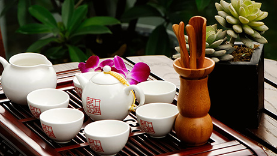
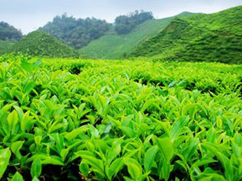

(044) 528-21-24, (095) 271-52-10Киев, бул. Дружбы народов 7Часы работы с 10:00 до 23:00
Чайная в Киеве
Чайные церемонии. Лучший китайский чай от 400грн
О нас
Изысканный, спокойный оазис посреди шумного города... Чай здесь любят и уважают. Все чаи, посуду и аксессуары сотрудники Клуба выбирают в Китае, дегустируют, сравнивают, изучают, и только после этого привозят в Украину, чтобы радовать всех настоящим хорошим коллекционным Чаем, правильно заваренным в хорошей посуде.
Плантации
Основной особенностью, которая отличает один чай от другого, является место его произрастания. В зависимости от климатических особенностей чай приобретает определённые свойства, характерные только для данной местности. Поэтому весь китайский чай можно классифицировать по провинциям, в которых его производят. У нас вы найдете огромный спектр разновидностей лучшего китайского чая и насладитесь удивительными оттенками этого прекрасного напитка.
Рецепты
Мы завариваем чай по самым лучшим старинным китайским рецептам, соблюдая все правила китайского чайного искусства. Наши сотрудники и мастера имеют высокую квалификацию и опыт работы. Для заварки чая мы используем только родниковую воду. Все вокруг должно быть гармоничным, поскольку все пять стихий участвуют в чайном действе. Так Вы получаете возможность насладиться всеми четырьмя «драгоценностями» чая: формой листа, цветом настоя, ароматом и, наконец, вкусом чая.
Варка чая на открытом огне по старинному рецепту Лу Юя